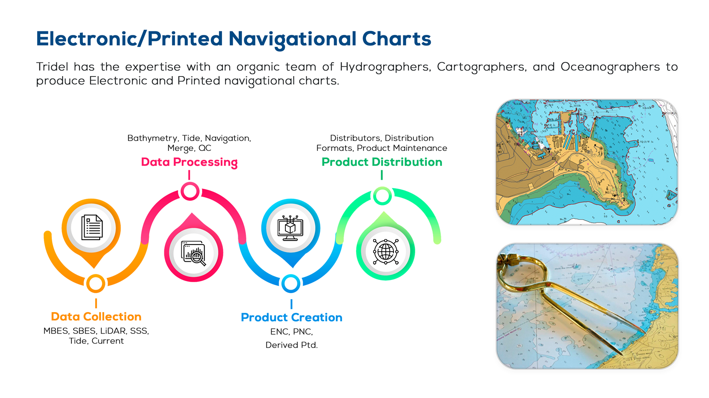

GeoInformatics (GIS)
We transform complex spatial data into intuitive visual insights. Our GeoInformatics services range from enterprise GIS implementation to custom application development, helping clients manage, analyze, and display their geospatial assets effectively.
Key Capabilities
- Enterprise GIS Implementation
- Custom GIS Application Development
- Data Integration & Transformation
- Spatial Analysis & Modeling
- Web/Mobile GIS Solutions

Click to Enlarge